|
Cooking
There are a variety of different foods you can cook in RuneScape. Food is useful because eating it will heal lost hit points. As you practice your cooking, your character will get better. You will burn food less often, and you will be able to make better food which heals you more.
To cook food you will need to use one of the many stoves which are scattered around the map. Alternatively if there aren't any stoves nearby you can build a campfire and use that. For more information on building fires please see our Firemaking section.
A guide to the different foods you can cook is shown below. In addition to the foods listed there are also some low-level foods and drinks which can be brought directly from the shops and pubs in RuneScape.
Cooking Items
A list of the different foods you can cook in Runescape are shown below with the cooking level needed (cooking) and the amount it heals your hit points (healing).
| Food |
Level |
Food |
Level |
Anchovies
|
Cooking 1
Heals 1 |
Meat
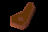 |
Cooking 1
Heals 3 |
Shrimp
|
Cooking 1
Heals 3 |
Chicken
|
Cooking 1
Heals 3 |
Bread
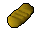 |
Cooking 1
Heals 4 |
Sardine
|
Cooking 1
Heals 4 |
Herring
|
Cooking 5
Heals 5 |
Mackerel
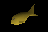 |
Cooking 10
Heals 6
Members Only |
Redberry pie
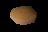 |
Cooking 10
Heals 6 |
Thin Snail
|
Cooking 12
Heals 5-7
Members Only |
Trout
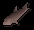 |
Cooking 15
Heals 7 |
Lean Snail
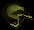 |
Cooking 17
Heals 6-8
Members Only |
Cod
|
Cooking 18
Heals 7
Members Only |
Pike
|
Cooking 20
Heals 8 |
Meat pie
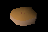 |
Cooking 20
Heals 8 |
Fat Snail
|
Cooking 22
Heals 7-9
Members Only |
Salmon
|
Cooking 25
Heals 9 |
Stew
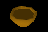 |
Cooking 25
Heals 9 |
Eel
|
Cooking 28
Heals 6-10
Members Only |
Tuna
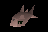 |
Cooking 30
Heals 10 |
Apple pie
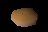 |
Cooking 30
Heals 10 |
Chompy
|
Cooking 30
Heals 10
Members Only |
Pizza
|
Cooking 35
Heals 11 |
Wine
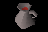 |
Cooking 35
Heals 11 |
Lobster
|
Cooking 40
Heals 12 |
Cake
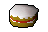 |
Cooking 40
Heals 12 |
Bass
|
Cooking 43
Heals 13
Members Only |
Swordfish
|
Cooking 45
Heals 14 |
Meat pizza
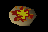 |
Cooking 45
Heals 14 |
Chocolate cake
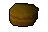 |
Cooking 50
Heals 15 |
Anchovy
pizza
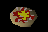 |
Cooking 55
Heals 16 |
Pitta
bread
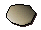 |
Cooking 58
Members Only |
Curry
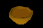 |
Cooking 60
Heals 19
Members Only |
Pineapple
pizza
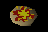 |
Cooking 65
Heals 20
Members Only |
Shark
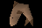 |
Cooking 80
Heals 20
Members Only |
Seaturtle
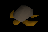 |
Cooking 82
Heals 21
Members Only |
Mantaray
|
Cooking 91
Heals 22
Members Only |
|
|
The Cooking Guild
If you are level 32 or above in your cooking skill and are wearing a chefs hat then you can enter the Cooking Guild which is just North-west of Varrock.
The cooking guild contains a number of items useful for cooks, including a flour mill, a water supply, and stoves to cook on as well as useful ingredients such as apples and chocolate.
Other foods
There are a number of other foods available to Members obtainable from the various races that inhabit RuneScape.
Visitors to the Tree Gnome Stronghold will be able to taste and create a wide variety of different foods at the Gnome Restaurant by using the recipe book available there, and there are further local delicacys to be discovered in many different regions of RuneScape.
Brewing (Members only)
A wide range of ales (including cider) can be brewed in the breweries of Keldagrim and Port Phasmatys. This is the list of ales that can be made:
|
Drink |
Image |
Level |
Main Ingredient |
|
Cider |
|
Level 14 |
4 Buckets of Apple Mush |
|
Dwarven Stout |
|
Level 19 |
4 x Hammerstone Hops |
|
Asgarnian Ale |
|
Level 24 |
4 x Asgarnian Hops |
|
Greenman's Ale |
|
Level 29 |
4 x Harralander |
|
Wizard's Mind Bomb |
|
Level 34 |
4 x Yanillian Hops |
|
Dragon Bitter |
|
Level 39 |
4 x Krandorian Hops |
|
Moonlight Mead |
|
Level 44 |
4 x Bittercap Mushrooms |
|
Chef's Delight |
|
Level 49 |
4 x Chocolate Dust |
|
Axeman's Folly |
|
Level 54 |
1 x Oak Root |
|
Slayer's Respite |
|
Level 59 |
4 x Wildblood hops |
How to brew ales
1.Add four buckets of water to an empty vat.
2.Add 2 handfuls of barley malt (barley that has been roasted on a range).
3.Add the main ingredient.
4.Add a pot of ale yeast (can be bought from local brewers).
How to brew cider
1.Put 4 apples into a cider-press.
2.Fill a bucket with apple-mush.
3.Pour 4 buckets of apple-mush into an empty vat.
4.Add a pot of ale yeast.
When the yeast has been added the mixture will begin to ferment, which may take anything up to a whole day, so be prepared to just leave it and do something else in the meantime. Eventually the ale or cider will be ready for drinking – turn the valve and the barrel will fill up with your chosen tipple. You can then fill up to 8 beer-glasses from the barrel, or alternatively, scoop the flesh out of a Calquat fruit with a knife and you have a keg that can hold 4 pints' worth by itself!
How To Cook
|
1. Pick some grain, and take it to the windmill to make flour.
2. You will need to use a pot to pick up the flour you have made.
3. Buy a bucket or jug, and fill it with water from a sink or fountain.
4. Mix the flour and water to make some bread dough.
5. Cook the dough by using it with a stove.
|
|
1. Mix flour and water to make some pastry dough.
2. Place the dough in an empty pie dish.
3. Use your choice of filling with the empty pie. (redberry, apple or meat)
4. Cook the pie by using it with a stove.
|
|
To cook fish you need to use your choice of fish with a fire or stove to cook it. (To find out how to catch fish please see our fishing section.)
|
|
1. Mix flour, eggs, milk together in a cake tin.
2. Cook the cake by using it with a stove.
3. Buy some chocolate and add it to the cake. (optional)
(optional)
|
|
1. Obtain a bowl, and fill it with water from a sink or fountain.
2. Pick a potato and place it in the bowl.
3. Cook some meat and place it in the bowl.
4. Cook the stew by using it with a stove or fire.
|
|
1.Make some uncooked stew(see stew description).
2.Before cooking the stew add some spices.
3.Cook the curry by using it with a stove or fire.
|
|
1. Fill a jug with water.
2. Use grapes with the jug of water.
3. Wait until the wine ferments.
4. Wine will ferment when left in your inventory or the bank.
|
|
1. Mix flour and water to make a pizza base.
2. Buy a tomato and add it to the pizza.
3. Buy some cheese and add it to the pizza.
4. Cook the pizza by using it with a stove.
5. Add your choice of topping to the pizza.
|
|
1. Cook some raw Ugthanki meat.
2. Obtain a bowl, a knife, an onion and a tomato.
3. Use the tomato and onion with the bowl while you have a knife in your inventory to make a bowl of onion and tomatos.
4. Add cooked ugthanki meat to the bowl.
5. Mix flour and water to make pitta dough.
6. Cook the Pitta Dough on a stove to make Pitta Bread.
7. Use pitta bread with the kebab mix to make a kebab.
|
|
1. Fill a bowl with water.
2. Put some picked nettles into the bowl of water.
3. Boil the nettle-water by using it with a range or a fire.
4. Use the bowl of nettle tea with a cup.
5. If you take milk, use a bucket of milk on it.
|
|